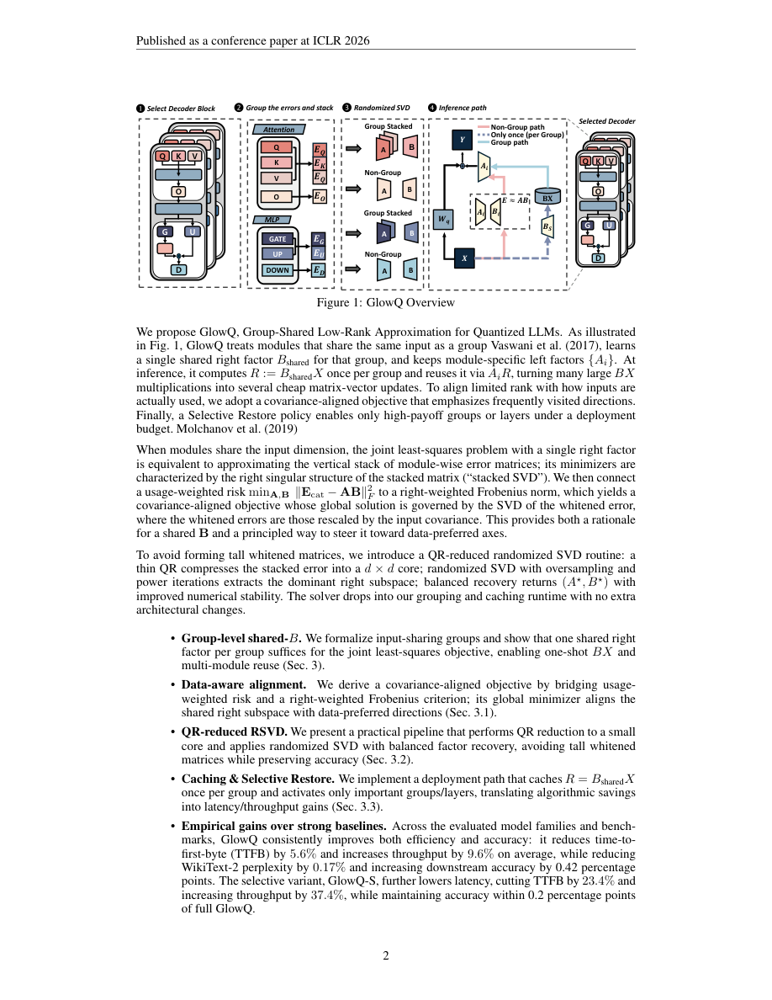

#1
★ 7/10
GlowQ: Group-Shared LOw-Rank Approximation for Quantized LLMs
GlowQ：面向量化大语言模型的组共享低秩近似方法

图 Figure · Page 2 of paper
🎯 组共享低秩修正显著降低量化LLM的误差与推理延迟
GlowQ shares a single low-rank correction factor across layer groups to fix quantization errors with far less overhead.
| 维度 | 中文 | English |
|---|---|---|
| ❓ 待解决 的问题 |
将大语言模型量化为4位等低比特格式能节省内存、加快部署，但会明显损害模型精度。现有的低秩纠错方法（如LQER、QERA、ASER）虽然能弥补精度损失，但需要在每一层都插入误差修正模块，导致内存开销大、推理延迟增加。 | Quantizing large language models to low-bit formats (e.g., 4-bit) saves memory and speeds up deployment, but significantly hurts model accuracy. Existing low-rank correction methods (like LQER, QERA, ASER) fix this accuracy loss but insert error-correction modules into every single layer, which adds substantial memory overhead and slows down inference latency. |
| 💡 解决 的亮点 |
• **组共享缓存机制**：不再为每一层单独存储低秩修正矩阵，而是对"输入共享组"（共享同一输入激活值的层组）缓存一个共享的右因子矩阵，大幅减少参数量。 • **选择性应用（GlowQ-S）**：选择性变体仅对精度收益最大的层或组应用共享修正模块，跳过收益不明显的层，进一步降低开销。 • **一次计算、多次复用**：每组仅计算一次高精度投影并在组内所有模块间复用，在不增加逐层代价的前提下保留了层级表达能力。 | • **Group-Shared Caching**: Instead of storing a separate low-rank correction for every layer, GlowQ caches a single shared right-factor matrix per "input-sharing group" (layers that share the same input activations), dramatically cutting parameter count. • **Selective Application (GlowQ-S)**: A selective variant only applies the shared correction module to the layers or groups where it yields the greatest accuracy benefit, skipping layers where the overhead isn't justified. • **Compute-Once, Reuse-Many**: The high-precision projection is computed once per group and reused across all modules in that group, preserving per-layer expressivity without per-layer cost. |
| 🧪 实验 内容 |
实验在WikiText-2上评估困惑度（perplexity），并在标准NLP下游任务上评估准确率，基线模型包括BitsAndBytes、AWQ、GPTQ、LQER、QERA和ASER等主流方法。推理效率通过首字节时延（TTFB）和吞吐量衡量。实验在主流开源LLM上以4位量化设置进行，贴近真实部署场景。 | Experiments evaluated perplexity on WikiText-2 and downstream task accuracy across standard NLP benchmarks, comparing GlowQ and GlowQ-S against strong baselines including BitsAndBytes, AWQ, GPTQ, LQER, QERA, and ASER. Inference efficiency was measured via Time-To-First-Byte (TTFB) and throughput. Tests were conducted on popular open-source LLMs under 4-bit quantization settings to reflect realistic deployment scenarios. |
| 📊 实验 结果 |
与强基线相比：GlowQ平均降低TTFB（首字节时延）5.6%、提升吞吐量9.6%，同时WikiText-2困惑度降低0.17%，下游任务准确率提升0.42个百分点。选择性变体GlowQ-S效率提升更为显著——TTFB降低23.4%、吞吐量提升37.4%，且平均精度损失控制在0.2个百分点以内。 | Compared to strong baselines: GlowQ reduces TTFB by 5.6% and increases throughput by 9.6% on average, while also reducing WikiText-2 perplexity by 0.17% and improving downstream accuracy by +0.42 percentage points. The selective variant GlowQ-S achieves much larger efficiency gains — cutting TTFB by 23.4% and boosting throughput by 37.4% — while maintaining accuracy within 0.2 percentage points of the full correction baseline. |
| 🏁 结论 | GlowQ证明了在输入共享层组间复用单一低秩修正因子，足以恢复量化精度并显著降低推理延迟与内存开销。GlowQ-S进一步表明，仅对收益最大的层选择性施加修正，可在几乎不损失精度的前提下实现大幅效率提升。 | GlowQ demonstrates that sharing a single low-rank correction factor across input-sharing layer groups is sufficient to recover quantization accuracy while meaningfully reducing inference latency and memory overhead. GlowQ-S further shows that selectively applying corrections only where they matter most enables dramatic efficiency gains with negligible accuracy trade-off. |
| 🔗 论文 链接 |
arXiv: 2603.25385v1 · 📥 PDF | |
⚙️ Method · 方法详解
GlowQ识别每个Transformer解码器块中共享相同输入激活的层组（例如Q、K、V投影层都接收相同的隐状态）。对每个这样的组，仅计算并缓存一个共享的低秩右因子矩阵，再叠加层特定的左因子矩阵，实现误差修正而无需冗余计算。选择性变体GlowQ-S按每单位精度提升对所有层和组进行排序，只为贡献最大的层激活共享模块，其余层保持标准量化状态。这种设计以极小的精度牺牲换取首字节时延（TTFB）和吞吐量的大幅提升。
GlowQ identifies groups of layers within each transformer decoder block that share the same input activations (e.g., Q, K, V projections all receive the same hidden state). It computes a single shared low-rank right-factor matrix for each such group once, caches it, and applies layer-specific left factors on top — achieving error correction without redundant computation. The selective variant GlowQ-S ranks all groups and layers by their per-unit accuracy improvement and only activates the shared module for the top-contributing ones, leaving the rest as standard quantized layers. This design trades a small accuracy concession for large gains in time-to-first-byte (TTFB) and throughput.
📐 Key Formulas · 关键公式
\[W_{corrected} = W_q + A_i B_{shared}\]
💡 量化权重修正公式：W_q 为量化后的权重矩阵，B_shared 为组内共享的低秩右因子矩阵，A_i 为该层特有的左因子矩阵，两者之积作为误差修正项叠加到量化权重上。
The corrected weight is the quantized weight W_q plus a low-rank correction: A_i is a layer-specific left factor and B_shared is the group-shared right factor cached once for all layers in the group.
🌟 Why It Matters · 为什么重要
随着大语言模型规模不断增大，在不损失精度的前提下实现低比特高效部署是实际应用的关键瓶颈。GlowQ为现有量化流程提供了实用的即插即用改进方案，帮助从业者以更低延迟、更高吞吐量部署高质量量化模型。
As LLMs grow larger, efficient low-bit deployment without accuracy degradation is a critical bottleneck for real-world applications. GlowQ offers a practical, plug-in improvement over existing quantization pipelines, making it easier for practitioners to deploy high-quality quantized models with better latency and throughput.